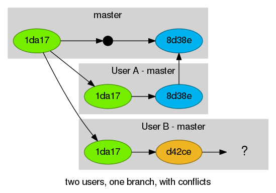
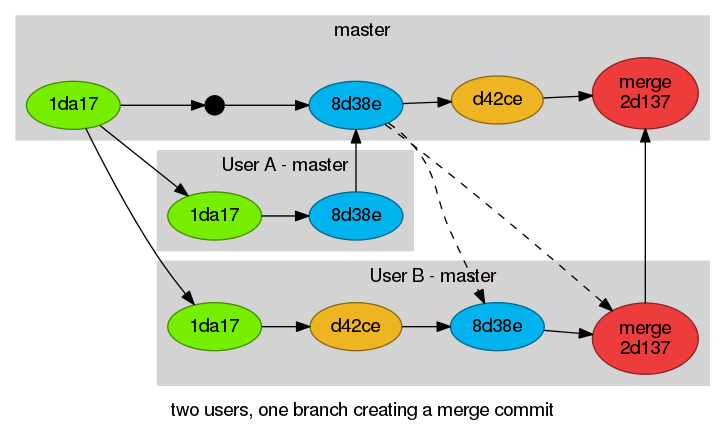
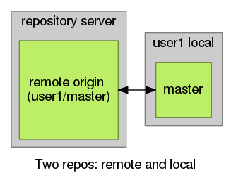
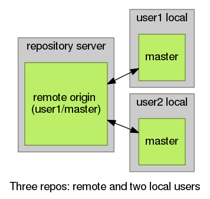
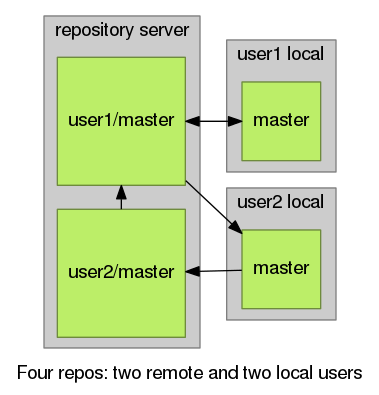
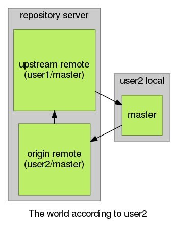

A distributed version-control system created in 2005 by Linus Torvalds for Linux kernel development when no existing options provided the required features.
When asked why he called the new software, "git", British slang meaning "a rotten person", he said. "I'm an egotistical bastard, so I name all my projects after myself. First Linux, now git."
Prerequisites
Git Commands
Working knowledge of Git from the command line. You must know the following commands and their usage:
clone
checkout
add
commit
push
pull
Glossary
VCS - Version-Control System
commit
repo / repository
tag
branch
Useful commands: Tagging commits
Like most VCSs, Git has the ability to tag specific points in history as being important.
Tags are generally used to denote a version release of the codebase or repository.
user@server ~/example $ git tag
user@server ~/example $ git tag v1.0
user@server ~/example $ git tag
v1.0
user@server ~/example $ git show v1.0
commit 1da177e4c3f41524e886b7f1b8a0c1fc7321cac2
Author: Example <user@example.com>
Date: Tue Jan 19 03:14:08 2038 0000
Initial git repository build.
Think of tags as “Commit Names”
Useful commands: Comparing differences
git diff shows the differences between commits, the stage, or your current working directory.
Often used to see what’s been changed since the last commit.
diff --git a/daemon.go b/daemon.go
index d3d57ae..f1ef55c 100644
--- a/daemon.go
+++ b/daemon.go
@@ -179,12 +180,19 @@ func (cli *DaemonCli) CmdDaemon(args ...string) error {
logrus.SetFormatter(&logrus.TextFormatter{TimestampFormat: timeutils.RFC3339NanoFixed})
+ if len(cli.LogConfig.Config) > 0 {
+ if err := logger.ValidateLogOpts(cli.LogConfig.Type, cli.LogConfig.Config); err != nil {
+ logrus.Fatalf("Failed to set log opts: %v", err)
+ }
+ }
+
var pfile *pidfile.PIDFile
if cli.Pidfile != "" {
pf, err := pidfile.New(cli.Pidfile)
Useful commands: Viewing changes in commit history
0c869ad Adjust pandoc template and Makefile to use highlightjs
0e92680 Add 'make publish' to update the rendered Github pages branch
413d635 Move revealjs download into Makefile
31f2cb0 Updating index.md with current gdocs
Useful commands: Whatchanged
user@server $ git whatchanged
commit a1f3028a87741bc5218373bc9af8a8aaa562b87e (HEAD, origin/master, origin/HEAD, master)
Author: Brad Erickson <user@example.com>
Date: Thu Oct 22 15:34:34 2015 -0700
Add custom.css and adjust Makefile to include
:100644 100644 e902fc1... 76f5a99... M Makefile
:000000 100644 0000000... 5de960e... A css/custom.css
Useful commands: Git Blame
Shows who wrote (or at least last edited) each line.
user@server $ git blame filename.txt
accd5f0c (Dries Buytaert 2001-03-10 11:07:52 +0000 1) <?php
^008612a (Dries Buytaert 2000-05-18 19:51:59 +0000 2)
94e30bf7 (Dries Buytaert 2004-08-21 06:42:38 +0000 3) /**
94e30bf7 (Dries Buytaert 2004-08-21 06:42:38 +0000 4) * @file
94e30bf7 (Dries Buytaert 2004-08-21 06:42:38 +0000 5) * The PHP page that serves all page requests on a Drupal installation.
94e30bf7 (Dries Buytaert 2004-08-21 06:42:38 +0000 6) *
362cade1 (Dries Buytaert 2007-12-26 08:46:48 +0000 7) * All Drupal code is released under the GNU General Public License.
f434037c (Nathan Haug 2011-10-30 21:05:57 -0700 8) * See COPYRIGHT.txt and LICENSE.txt files in the "core" directory.
94e30bf7 (Dries Buytaert 2004-08-21 06:42:38 +0000 9) */
94e30bf7 (Dries Buytaert 2004-08-21 06:42:38 +0000 10)
5e58da00 (Nathaniel Catchpole 2014-06-26 11:47:01 +0100 11) use Drupal\Core\DrupalKernel;
5e58da00 (Nathaniel Catchpole 2014-06-26 11:47:01 +0100 12) use Symfony\Component\HttpFoundation\Request;
8a567823 (Alex Pott 2014-04-25 20:13:44 +0100 13)
95fe74d5 (catch 2015-03-11 08:31:22 +0000 14) $autoloader = require_once 'autoload.php';
5e58da00 (Nathaniel Catchpole 2014-06-26 11:47:01 +0100 15)
Useful commands: Git Stash
Store your changes and remove them from the working directory. A stash can re-applied later as needed.
user@server ~/example $ git stash
user@server ~/example $ git stash list
stash@{0}: WIP on master: 049d078 added the index file
stash@{1}: WIP on master: c264051 Revert "added file_size"
stash@{2}: WIP on master: 21d80a5 added number to log
user@server ~/example $ git stash apply
Useful commands: Amend
user@server ~/example $ git commit --amend
Replace the current commit. Often used for minor updates.
Careful! Don't amend published commits, anything someone else may have pulled.
Useful commands: Force push
user@server ~/example $ git push --force
Overwrites the remote branch history with your local branch history.
Careful! You can delete your remote branch history with this command or even the entire repository.
Useful commands: Bisect
Bisect: Divide into two parts
user@server ~/example $ git bisect start
user@server ~/example $ git bisect bad 90d6
user@server ~/example $ git bisect good 362c
Run through the commit history to find where a change was introduced. An optimized binary search is more efficient than checking out each commit in order:
To https://server.com/user/example.git
! [rejected] master -> master (non-fast-forward)
error: failed to push some refs to 'git@server.com/user/example.git'
To prevent you from losing history, non-fast-forward updates were rejected
Merge the remote changes (e.g. 'git pull') before pushing again. See the
'Note about fast-forwards' section of 'git push --help' for details.
Git won't be able to push your changes if another user has pushed to the same branch as you.
What do you do?

Common solution
user@server ~/example $ git pull # Equal to fetch and merge.
user@server ~/example $ git push

Reasons to avoid
Creates an extra git merge commit
Introduces greater risk of merge conflicts
A messy git history makes problems more difficult to track down.
A Better Solution
All shared work goes into a development branch.
Controlled releases happen off of this branch when it is merged into the Master branch.
Master is preserved for hotfixes
The Best Solution
Two users work in their own branches, the second branch is rebased, then merged to master when features are complete. This is the Github/Bitbucket Pull Request workflow.
Creating branches
Git branches allow you to separate work on a project into discrete groups of commits.
Ideally name branches descriptively, such as:
issue#-short_description
user@server ~/example $ git branch #List local branches
* master
user@server ~/example $ git checkout -b 1-readme-details #Create a new branch
Switched to a new branch '1-readme-details'
user@server ~/example $ git branch #List local branches
master
* 1-readme-details
Deleting branches
Branches can be used for new features, temporary tests or quick backups.
user@server ~/example $ git commit -am "Updating readme"
[1-readme-details 5849d9b] Updating readme
1 file changed, 1 insertion(+), 1 deletion(-)
user@server ~/example $ git checkout master
Switched to branch 'master'
user@server ~/example $ git branch -d 1-readme-details
error: The branch '1-readme-details' is not fully merged.
If you are sure you want to delete it, run 'git branch -D 1-readme-details'.
user@server ~/example $ git branch -D 1-readme-details
Deleted branch 1-readme-details (was 5849d9b).
Delete local and remote branches when you are done with them.
Merging branches
A merge creates a new commit to incorporate changes from other branches. The two branches commit histories are combined into a single history with each commit holding its place in time.
user@server ~/example $ git merge linux
Auto-merging src/ProjectLauncher/LaunchForm.cs
CONFLICT (content): Merge conflict in src/ProjectLauncher/LaunchForm.cs
Automatic merge failed; fix conflicts and then commit the result.
Merge conflicts: Resolving
user@server ~/example $ git status
On branch master
You have unmerged paths.
(fix conflicts and run "git commit")
Unmerged paths:
(use "git add <file>..." to mark resolution)
both modified: LaunchForm.cs
using System.Drawing;
using System.Text;
<<<<<<< HEAD
using System.Macos.Forms;
=======
using System.Linux.Forms;
>>>>>>> linux
using EnvDTE;
user@server ~/example $ git add LaunchForm.cs
Remotes and forks: Origin Remote
The source repository is called your origin remote.
user@server ~ $ git clone https://github.com/user/example.git
user@server ~ $ cd example
user@server ~/example $ git remote
origin
user@server ~/example $ git status
On branch master
Your branch is up-to-date with 'origin/master'.

Remotes and forks: Two users, one remote

Two users can use the same repository as their origin remote.
Remotes and forks: Two users, two remotes.
User2 forks the project repository creating their own fork.

Remotes and forks: Origin and Upstream

The world according to user2
Pull changes from upstream into local/master
Pushes changes to origin
Merges to upstream or create a Pull Request.
Remotes and forks: Update your fork
There are changes to the upstream master. How do you bring those changes into your fork’s master branch?
Now make your new feature branch or rebase your existing branches.
Pull requests
A pull request is a request to pull your changes.
Not a feature of Git, but of UI tools such as Github, Bitbucket, and Gitlab.
Create a pull request when you have new commits for a project in a fork and/or branch which should be pulled into the original project.
”I’ve made some changes! Will you accept them?”
Rebase
"REset your git branch BASE commit"
A merge creates a single commit with two parents, creating a non-linear history.
A rebase “replays” the commits from one branch onto another, creating a linear history. Commits for each feature stay together.
The goal: Create a clean history without resolved merge conflicts or dozens of tiny commits.
Rebasing a feature branch - 1
Remember this?
Rebasing a feature branch - 2
Rebase to master, then merge to master.
git checkout FeatureB
git rebase master
git push -f # Force update your remote branch
git checkout master
git merge master # Or create Pull Request
Squashing commits - 1
You push early and often, but that results in a cluttered history.
user@server ~/example $ git log --oneline
bf7d984 Minor readme edit
7fc1195 Readme details
53ddfc4 Minor edit
63df92b Minor edit
7714f34 New feature
286e2e4 Initial
Rebase allows you to “squash” those extra commits together.
Squashing commits - 2
user@server ~/example $ git rebase -i 286e2e4
Which opens your default text editor
pick 7714f34 New feature
pick 63df92b Minor edit
pick 53ddfc4 Minor edit
pick 7fc1195 Readme details
pick bf7d984 Minor readme edit
# Rebase 286e2e4..bf7d984 onto 286e2e4
# Commands:
# p, pick = use commit
# r, reword = use commit, but edit the commit message
# e, edit = use commit, but stop for amending
# s, squash = use commit, but meld into previous commit
# f, fixup = like "squash", but discard this commit's log message
# x, exec = run command (the rest of the line) using shell
# These lines can be re-ordered; they are executed from top to bottom.
# If you remove a line here THAT COMMIT WILL BE LOST.
# However, if you remove everything, the rebase will be aborted.
# Note that empty commits are commented out
Squashing commits - 3
Change pick to squash
pick 7714f34 New feature
squash 63df92b Minor edit
squash 53ddfc4 Minor edit
pick 7fc1195 Readme details
squash bf7d984 Minor readme edit
Save and exit.
Squashing commits - 4
git opens the text editor again allowing you amend the commit message of the now combined commits.
# This is a combination of 3 commits.
# The first commit's message is:
New feature
# This is the 2nd commit message:
Minor edit
# This is the 3rd commit message:
Minor edit
# Please enter the commit message for your changes. Lines starting
# with '#' will be ignored, and an empty message aborts the commit.
# rebase in progress; onto 286e2e4
# You are currently editing a commit while rebasing branch 'master' on '286e2e4$
#
# Changes to be committed:
# modified: site.css
#
Squashing commits - 5
The result: a clean git history ready to merge or used in a pull request.
user@server ~/example $ git log --oneline
bf7d984 Minor readme edit
7fc1195 Readme details
53ddfc4 Minor edit
63df92b Minor edit
7714f34 New feature
286e2e4 Initial
user@server ~/example $ git rebase -i 286e2e4444px
[detached HEAD 859d12b] New feature
1 file changed, 4 insertions(+)
[detached HEAD d714f67] Readme details
1 file changed, 3 insertions(+)
Successfully rebased and updated refs/heads/master.
user@server ~/example $ git log --oneline
d714f67 Readme details
859d12b New feature
286e2e4 Initial
Editing commits with rebase - 1
Editing commits with rebase is functions like amending a commit, but allows you to work with the entire history.
user@server ~/example $ git rebase -i 286e2e4
Your text editor:
edit 859d12b New feature
pick d714f67 Readme details
# Rebase 286e2e4..d714f67 onto 286e2e4
#
# Commands:
# p, pick = use commit
# r, reword = use commit, but edit the commit message
# e, edit = use commit, but stop for amending
# s, squash = use commit, but meld into previous commit
# f, fixup = like "squash", but discard this commit's log message
# x, exec = run command (the rest of the line) using shell
Editing commits with rebase - 2
The result of a rebase to simply edit a commit message
user@server ~/example $ git log --oneline
d714f67 Readme details
859d12b New feature
286e2e4 Initial
user@server ~/example $ git rebase -i 286e2e4
Stopped at 859d12bdcfc54fafcb5fbca3bb9ab0da57f4c92a... New feature
You can amend the commit now, with
git commit --amend
Once you are satisfied with your changes, run
git rebase --continue
user@server ~/example $ git commit --amend
[detached HEAD 0a9c2fe] New feature, more details to message
1 file changed, 4 insertions(+)
user@server ~/example $ git rebase --continue
Successfully rebased and updated refs/heads/master.
user@server ~/example $ git log --oneline
7d328c7 Readme details
0a9c2fe New feature, more details to message
286e2e4 Initial
Useful commit messages
Not this
git commit -m “css fix”
It is not descriptive or useful.
Yes, this.
The git history explains how the project evolved and why decisions were made. Git commit messages, just like code comments, should succinctly explain “what”, but explain why in detail.
tag: Short explanation of the commit
Longer explanation explaining exactly what's changed and why, whether any
external or private interfaces changed, what bugs were fixed (with bug
tracker reference if applicable) and so forth. Be concise but not too brief.